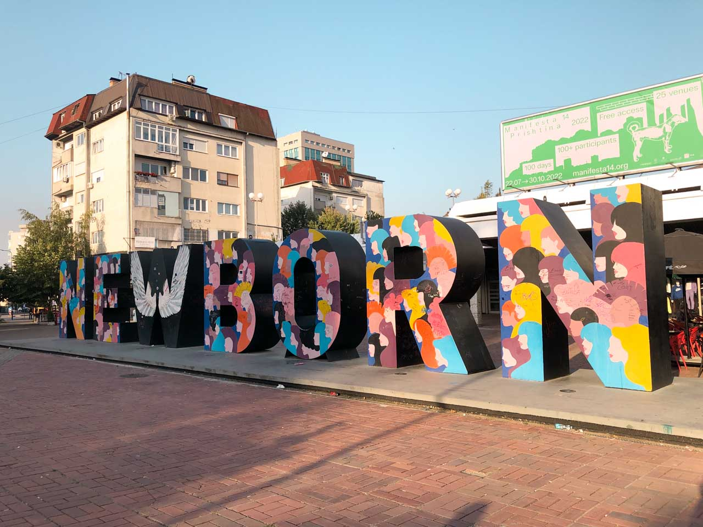

Exciting Developments in Kosovo's Tourism

GuideKS is a popular platform designed to promote tourism in Kosovo by providing visitors with comprehensive information on various destinations, services, and experiences throughout the country.It serves as a comprehensive guide for both locals and tourists, offering valuable information on everything from tourist destinations to practical travel details. The platform seeks to showcase Kosova’s rich culture, history, and natural beauty, positioning the country as an attractive tourist destination, but also aims to help tourists plan their trips more easily by offering practical details, insights, and recommendations about Kosova's attractions, accommodations, activities, and culture. Here’s a breakdown of what GuideKS offers in their packages:
- Tourist Destinations
- Accommodation
- Cultural and Historical Information
- Events and Festivals
- Activities and Adventure Tourism
- Restaurants and Dining
- Transportation and Accessibility
- Local Experiences
- Online Booking and Services
- Multilingual Support
Kosovo's tourism sector is undergoing exciting developments, positioning the country as an increasingly attractive destination in the Balkans and Europe. Here are some of the key developments that are contributing to the growth and transformation of tourism in Kosova:
Tourism in Kosovo has experienced significant growth, driven by infrastructure investments and improved transportation networks. The expansion of Pristina International Airport with new routes and better facilities has enhanced accessibility, while modern hotels and guesthouses in major cities and tourist areas now offer improved accommodations for visitors.
International interest in Kosovo as a tourist destination is rising, with more visitors from neighboring countries and Western Europe. Diaspora tourism remains a strong contributor, as Kosovars living abroad frequently return to explore their heritage and cultural roots.
Cultural and heritage tourism has also flourished. Historic sites such as Prizren’s Ottoman-era architecture and the UNESCO-listed Visoki Dečani Monastery draw many visitors. Efforts to promote these landmarks continue to boost cultural tourism.
Eco and adventure tourism are growing sectors. The Shar Mountains offer year-round activities, including skiing and hiking, while destinations like Gajtanaj Village and Radoniqi and Ujmani Lakes cater to eco-tourists and outdoor enthusiasts.
Sustainability is a key focus, with initiatives promoting responsible tourism and community-based experiences. Agrotourism and eco-friendly activities help preserve natural resources while supporting local economies.
Festivals and cultural events have become major attractions. The Prishtina International Film Festival and Kosovo Music Festival bring international tourists and highlight the vibrant cultural scene.
Gastronomy tourism is thriving, with traditional Kosovar dishes like burek and flija gaining popularity. Farm-to-table experiences offer visitors a taste of local foods and beverages, enhancing their cultural exploration.
Digitalization has boosted Kosovo’s tourism appeal, with a growing online presence, virtual tours, and tourism apps making it easier for travelers to plan trips. This enhanced accessibility supports the country’s image as an emerging destination.
International organizations like the UNDP and EU have provided support for sustainable tourism development, infrastructure improvements, and marketing efforts, helping Kosovo grow as a travel hotspot.
The expanding tourism sector presents new opportunities for local entrepreneurs, creating jobs and encouraging small business growth in hospitality, transportation, and cultural services. This economic diversification is particularly beneficial in rural areas, where tourism is contributing to regional development.
Kosovo’s tourism industry is experiencing a transformation, with increasing interest from international travelers and a growing emphasis on sustainability, cultural heritage, and adventure tourism. As the country continues to develop its infrastructure, promote its natural beauty, and host unique cultural events, it is well on its way to becoming a key destination in the Balkans and beyond. Whether you're looking for historical exploration, outdoor adventures, or cultural experiences, Kosovo has something to offer every type of traveler.